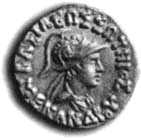

Mentality is Hard to DiscernMemory1 .“In how many ways, Nāgasena, does memory spring up?” “In seventeen ways,1 O king. That is to say; by personal experience, as when
one like Ānanda can recollect his previous lives (without special development); by outward aid, as when others remind one who is forgetful; by the greatness of some occasion, as when a king remembers his coronation or as one remembers attaining the stage of a Stream-winner; by the impression made by benefit, as when one remembers that which gave him pleasure; by the impression made by detriment, as when one remembers that which gave him pain; by similarity of
appearance, as one remembers one’s mother or father or brother or sister on seeing someone like them; by dissimilarity of appearance, as one remembers someone on seeing one unlike them; by the knowledge of speech, as when one is reminded by others; by a sign, as one recognises a draught bullock by seeing a brand mark; by effort to recollect, as when one is urged again and again; by knowledge of spelling, as
one who knows how to write remembers that such a letter follows another; by arithmetic, as when accountants do large sums by their skill with figures; by learning by heart, as reciters of scriptures recollect by their skill in reciting; by meditation, as when a monk recalls his previous lives; by reference to a book, as when kings call to mind a regulation made previously by reference to a book; by a pledge,
as when a man recollects by the sight of goods deposited the circumstances under which they were pledged; or by association, as when on seeing or hearing something one remembers other things associated with it.” 2. “You say that a man who has lived an evil life for a hundred years can, by thinking of the Buddha at
the moment of his death, be reborn among the gods; and that a good man can, by one bad deed, be born in hell. These two things I do not believe.” “What do you think, O king. Would a tiny stone float on water without a boat?”
“No.”
“But even a cartload of stones would float in a boat. So you should think of good deeds as a boat.” 3. “Do you monks strive after the removal of past, present and future suffering?”
“No. We strive so that this suffering should cease and no other suffering should arise.” “But is there now, Nāgasena, such a thing as future suffering?”
“No.” “Then you are extremely clever to strive after the removal of it!”
“Have rival kings ever risen up to oppose you, O king?” “Yes they have.”
“Was it only then that you made preparations for battle?” “Not at all. All that had been done beforehand in order to ward off future danger.”
“But is there now, O king, such a thing as future danger?” “No, venerable sir.”
“Then you are extremely clever to strive after the removal of it!”
“Well answered, Nāgasena, you are dexterous in reply.” 4. “How far is it to the Brahmā realm?”
“Very far, O king; it would take a rock four months to reach the earth from the Brahmā realm even though it fell 48,000 leagues each day.” “So how can a monk travel there so quickly even by supernormal power?”
“Where were you born, O king?”
“There is an island called Alasanda; I was born there.” “How far is it from here?”
“About two hundred leagues.” “Do you recall any business you did there?”
“Yes I do.” “So quickly you have gone two hundred leagues! Just so, the monk can reach the Brahmā realm at once
by supernormal power.” 5. The king asked, “If one man were to die and be reborn in the Brahmā realm and at the same moment another man were to die and be reborn in Kashmir which man would arrive first?” “How far is your home town from here?”
“Two hundred leagues.” “And how far is Kashmir?”
“Twelve leagues.” “Which of them did you recall more quickly?”
“Both the same venerable sir.”
“Just so, O king, those men who died at the same moment would be reborn at the same moment.” 6. “How many factors of enlightenment are there?”
“Seven, O king.” “By how many factors does one awaken to the truth?”
“By one, investigation of truth, for nothing can be understood without that.” “Then why is it said that there are seven?” “Could the sword that is in your scabbard cut anything if it was not taken up in the hand?”
“No venerable sir.”
“Just so, O king, without the other factors of enlightenment, investigation of truth could not awaken to the truth.” 7. “Which is the greater, merit or demerit?”
“Merit, O king. One who does wrong feels remorse and realises his mistake, thereby demerit does not increase. However, one who does merit feels no remorse; and gladness and joy arise, and so rejoicing he will be at ease, being relaxed he will feel contented, being content his mind will be easily
concentrated, being concentrated he will see things as they really are. In that way merit increases. So merit is much greater. Demerit is relatively insignificant.” 8. “Which is the greater demerit, conscious or unconscious wrong-doing?”
“Unconscious wrong-doing,2 O king.” “Then we should doubly punish those who do wrong unconsciously.” “What do you think, O king, would a man be more seriously burned if he seized a red-hot iron ball not
knowing it was hot than he would be if he knew.”
“He would be burned more severely if he didn’t know it was hot.” “Just so, O king, it is the same with the man who does wrong unconsciously.” 9. “Is there anyone who can physically go to the Brahmā realm or to another continent?”
“Yes, O king, there is. As easily as you can jump a short distance by determining in your mind, ‘I will land there,’ so too one who has developed absorption (jhāna) can go to the Brahmā realm.” 10. “Are there bones 100 leagues long?”
“Yes there are fish in the ocean 500 leagues long who have such bones.”3 11. “Is it possible to suppress the respiration?”
“Yes it is. As it is possible to stop the snoring of one of undeveloped mind by bending his body, so it is
possible for one of well developed mind to suppress the respiration.” 12. “Why is the ocean so called?”
“Because it is a uniform mixture of salt and water.” (Sama = even, Udda = water, Samudda = ocean). 13. “Why is the ocean all of one taste?”
“Because it has stood for so long.”4 14. “Is it possible to dissect even the most subtle thing?”
“Yes, O king. Wisdom is able to dissect every subtle thing.” “What is meant by every subtle thing?”
“Dhamma is everything subtle. However, not all dhammas are subtle, some are coarse. Subtle and coarse are only concepts. Whatever is divisible can be divided by wisdom. There is nothing else that can dissect wisdom.” 15. “These three, Nāgasena, consciousness (viññāna), wisdom (paññā) and the soul (bhūtasmim jīvo); are they different in essence or only in name?”
“Knowing, O king, is the mark of consciousness and discrimination5 is the mark of wisdom. A soul cannot be found.” 16.The elder said, “A hard thing has been done by the Blessed One; the distinguishing of all those mental phenomena that depend on an organ of sense, showing such and such is contact, such is
feeling, such is perception, such is intention and such is the mind (citta).” “Give me an illustration.”
“If a man were to take a handful of water from the ocean and tasting it could say, ‘This water is from the Ganges, this from the Jumna, this from the Gandak, this from the Sarabhu, and this from the Mahī?.’
More difficult than this is the distinguishing of those mental states that accompany any one of the senses.” Since it was midnight the king made offerings to Nāgasena and the king said, “Like a lion in a golden cage longs only for freedom, so do I long for the monk’s life but I would not live long, so many are my enemies.” Then Nāgasena, having solved the questions put by King Milinda, arose from his seat and returned to the hermitage. Not long after Nāgasena had gone, King Milinda reflected on the questions and answers and concluded, “Everything was rightly asked by me and everything was properly answered by Nāgasena.” Back at his hermitage, Nāgasena reflected and concluded in a similar manner. In this chapter there are sixteen questions |